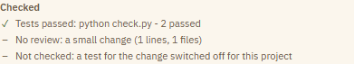
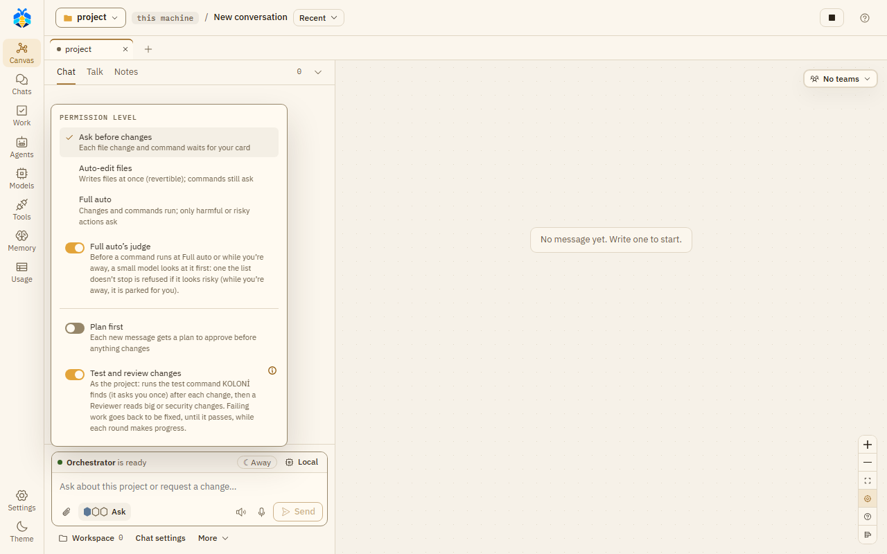
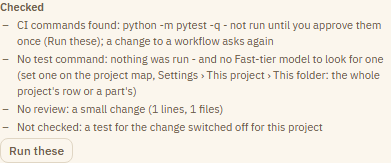
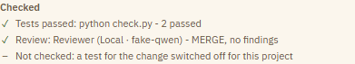
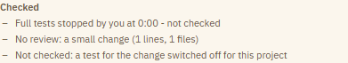
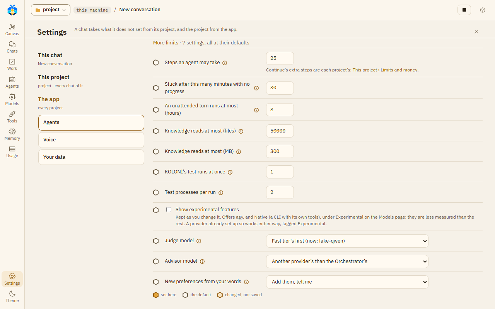
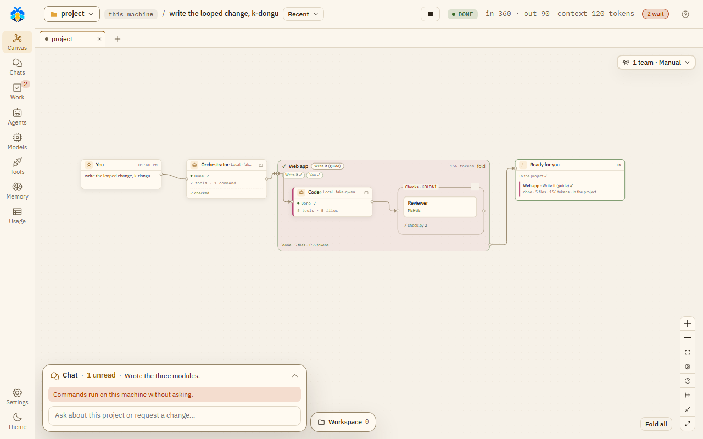
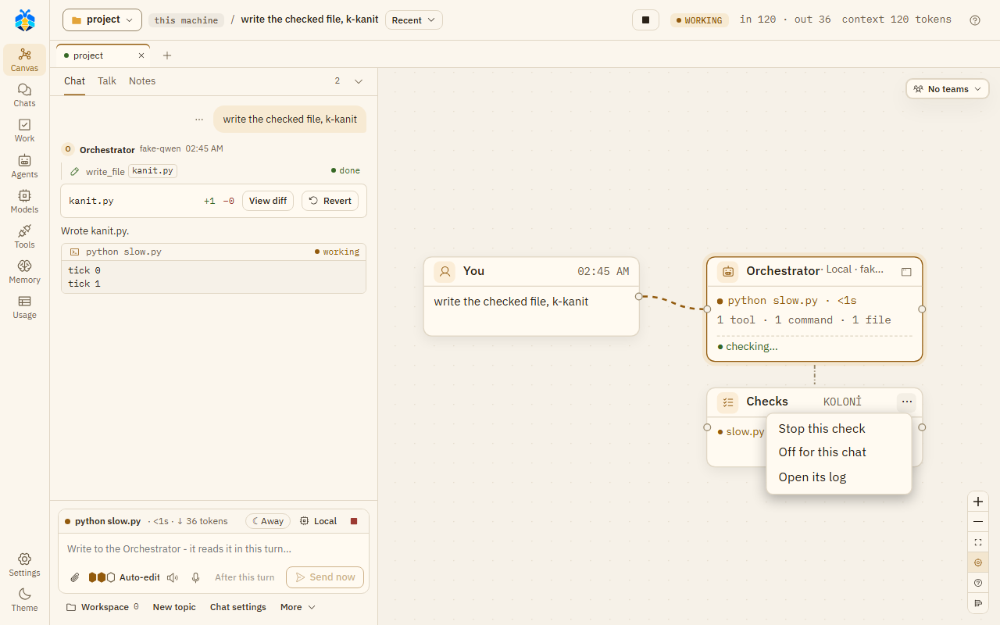
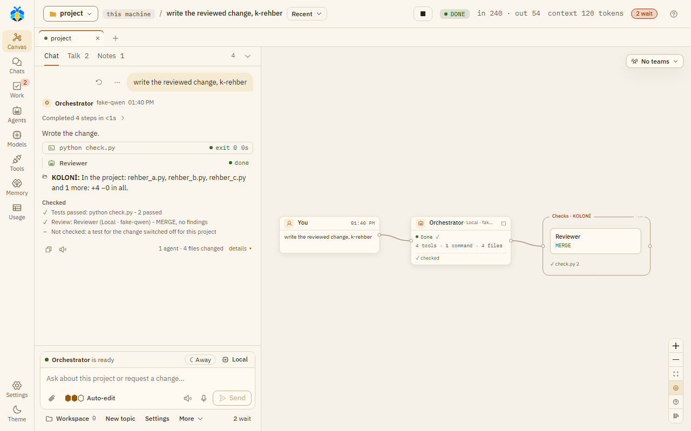

Checked¶
A turn that changed code does not end on the model's word. Before the Orchestrator's answer ends the turn, KOLONİ runs the project's tests once on the work as it now stands. Under the answer a Checked section says what ran, how it went, and what was not checked. KOLONİ writes it from its own records, not from the model's words, and no model is asked for it.
It works the same for every model and CLI.

![Proven finish: the Orchestrator's answer, the related tests, the whole suite after the answer, the documents, diagrams, data, slides, config files and scripts, the project's own code style and type checks and pages (console, width, accessibility), a Reviewer's look (long documents read against the request), the live try, a test for the change, then Checked; a failure goes back as a fix round, then to a stronger model that says what is wrong first, and failing work is not taken in; apart from them, a sub-agent's own tests before its work is taken in; and where Settings sets each part](../../diagrams/proven-finish.svg)
What KOLONİ checks at a turn's end, and where you set each part. (full size)
In order, the first check that sends work back ends the pass, and the Orchestrator's next answer is checked again:
- The tests - the ones related to the change first, the whole suite after the answer (Which tests, Asking, How long it waits). What is not this turn's - a flaky test, one failing before - is told apart (Not this turn's).
- What it wrote besides code - documents, diagrams, data, slides, config files and scripts, and the changed code by the project's own ruff, eslint, tsc and mypy (Documents, diagrams, data and slides), and, where you ticked Pages, a changed page opened in KOLONİ's own browser at a phone's, a tablet's and a desktop's width - its console, its width and its accessibility (Pages).
- A Reviewer's look at a big or security-touching change (The review); long documents are read once against your request (Documents read against your request).
- The live try, once a turn: a changed command-line tool is asked for its
--help, and a big change of screens is tried by a Tester on the chat's preview (The live try). - A test for the change, where you ticked it: asked once where code changed and no test did (A test for the change).
A failure goes back to the Orchestrator until it passes - while each round makes progress - or as many times as Fix rounds says (When the tests fail); then a stronger model tries, and failing work is never taken in (A stronger model). Checked under the answer says it all, line by line (What each line means), and the canvas's Checks node shows it (On the canvas). A recipe's turn follows the recipe's own Checks step (The Checks step).
When it runs¶
- After a turn in a project folder that changed a file. A turn that changed nothing, a plain
chat, a plan, and a side of a comparison get no Checked section - except a turn that changed
nothing right after one whose checks still failed: it says "Still failing as last checked - this
turn changed nothing" with those failing lines, and Fix it stays under the newest turn (not
once the turn they came from is undone - also after turns that said them again, and no Fix it
is offered for it then -, nor once this chat's checks are off; the canvas draws no Checks node
for it, as no check ran). A
change made only by a
command (
python -c "open(…).write(…)",sed -i, a heredoc to a file, a redirection into one cat a > b,git show HEAD:f > f, not2>&1or> /dev/null-, a formatter,black . && pytest -q, a test run that writes -jest -u,pytest --snapshot-update,--junitxml=a.py, a coverage report that is a file,--cov-report=html-, a line handed to a shell that does) is on no record, so KOLONİ runs the tests all the same and says "A command of this turn may have changed files KOLONİ did not record: …", with "No review: changes made by a command are not recorded". In a git project such commands count only where git lists a file written since the first of them began, or one committed during the turn, and the line names them ("… did not record: gen.py - python gen_it.py"): apython main.pythat only answered changes nothing. A tracked test file such a command deleted is said "Test removed", as one deleted on record is. A turn whose commands only read or ran tests is still a turn that changed nothing.- Where the work now is: in the project, or in the Orchestrator's own working copy (a team's branch, or a job while you're away). Work that waits in Ready for you is not part of it.
- Once, after the turn's work is in: the agents run only the tests near their change while they work, and KOLONİ runs the whole test command at the end, like a pull request's CI - in a turn you watch, the tests related to the change first and the whole suite after, in the background (see How long it waits).
- KOLONİ runs one such test run at a time across the app, unless Settings say more (see How many run at once). A second turn that ends meanwhile waits for the first. A run whose card waits for your yes holds up no other: it takes its turn once you answer.
Settings › This project › When the work is done › After a change turns it on or off for the project:
- Test and review (the default) runs the tests, and has a big or security-touching change looked over by a read-only Reviewer (see The review).
- Tests only runs the tests and nothing more.
- Nothing runs nothing and sends nothing back. The Checked section still says that nothing was checked, and names the last test run an agent made in the turn.

The line under the choice says what it does in this project now, from its real state - for example "Runs python -m pytest -q in ./ (found by KOLONİ), related tests first, the whole suite in the background; a change over 80 lines or 3 files, or one touching sign-in, secrets or commands, is read by a Reviewer (one more model request). Failing work goes back until it passes, while each round makes progress." It names each test command you set for a part on the project map ("npm test in web/"), then what KOLONİ saved for any other folder - and changes as you save one there. Before a test command is known it says KOLONİ finds one and asks you once. Its ⓘ leads here.
For one chat¶

Test and review changes, in the permission level's menu beside Plan first, turns it on or off for this chat only. Its line says what this chat's changes get: "As the project: runs python -m pytest -q after each change, then a Reviewer reads big or security changes. Failing work goes back to be fixed, up to 2 times.", "Off for this chat: nothing is tested or reviewed; each answer says “Not checked”.", or "On for this chat · the project's is Nothing: runs …" (on in a project at Nothing is Test and review for this chat). Its ⓘ leads here. Off, the level's button says "· no checks", no Checks node is drawn for its turns, the Checked section says "Not checked: off for this chat" and the Orchestrator's box "not checked · off for this chat". Other chats go on with the project's setting.
It is free at every level. At Full auto with it off, the menu says so under it: "Full auto with no checks: nothing checks this chat's changes". A turn that runs a team's recipe follows the recipe's Checks step, not this switch: the project's setting, unless the recipe sets its own - a recipe you picked may check less, one the Orchestrator picked only adds checks (The Checks step).
A project that had turned off the old Finish only when the tests pass switch is on Nothing, and Settings says so under the setting.
Which tests¶
- Each part's test command from the project map (yours, or the map's guess), run in that part's folder - the whole project's too, set on the map's first row (the whole project) where no project file makes the root a part. It runs beside the other parts' commands, not instead of them: where it runs every test, a Python part's tests run twice - in its own command and in the whole project's. A part you set to no test is never guessed - the whole project set to no test stops the guess (3-5) too. (0.1.7: Test before adding is gone, and the command you had in it was not kept: write it here.)
- Otherwise the test command KOLONİ saved before (below).
- Otherwise a command KOLONİ guesses from each part's files, in any language:
python -m pytest -q(apyproject.toml,pytest.iniortests/),npm test(a test script inpackage.json),go test ./...(go.mod),cargo test(Cargo.toml),mvn test(pom.xml),./gradlew testorgradle test(build.gradle),dotnet test(a.slnor.csproj),bundle exec rspec(aGemfileandspec/),composer testorvendor/bin/phpunit(composer.json),mix test(mix.exs),swift test(Package.swift),ctest --test-dir build(CMakeLists.txt),make test(atest:target in theMakefile). - Otherwise a test command an agent ran in this turn that really ran tests, in a turn you are there for (not while you're away).
- Otherwise KOLONİ asks the project's Fast tier's model once, in a turn you are there for, where its tests are. KOLONİ shows it the project's parts and languages, its test files and the start of its README, CONTRIBUTING and Makefile (never a secret file, nor one reached through a link), with no tool. It answers with command lines, which are read as data. The request shows in Usage. It is asked again only when the project's parts change; until then the commands it named are tried again. With no Fast-tier model the section says so.
A line an agent ran (4) or the model named (5) is tried only if it is one of the commands in 3,
or pytest, npx vitest run, npx jest, yarn test, pnpm test, bun test, tox, nox or
ctest - with at most -q or -v after it, in a folder of the project. Any other line (more options, a wrapper, a chain) is never run: the look's row says
how many it named that were not tried.
A guessed command is tagged guessed. If nothing can be found, the section says "No test command: nothing was run"; after the look found no tests at all, "No tests in this project".
From your CI¶
Where the project has GitHub Actions workflows (.github/workflows/*.yml), KOLONİ reads their
lint, typecheck and test lines - ruff, eslint, mypy, ty check, tsc, pytest, vitest and
the like, each in its step's working-directory (or the job's or workflow's defaults.run). Each
line must be one plain command of at most 500 characters: a line that chains, pipes, redirects
or substitutes (pytest; curl …, npm test && …, cd web && npm test, pytest $(…)) is not
taken. It never takes an e2e step, nor a step with a ${{ … }} expression, a secret or an install
in it, one whose shell: is another language, or one whose folder is outside the project. The
workflow files are read with limits - at most 50 files, 256 KB each and 1 MB in all, no links, no
YAML aliases; a file past them is not read. What was left out is said beside the lines it offers
or runs ("e2e not run: …", "CI step Tests: not run: not a plain command", "CI file not read: …");
where no line is taken, nothing of the CI is said.
It asks once a project: the section lists them - "CI commands found: ruff check app, python -m pytest -q - not run until you approve them once (Run these)" - and Run these approves exactly the lines that row shows.

If the workflow files changed since, or another turn offered other lines, nothing is approved and they are offered again after the next change. From the next change on they are the turn's test run, one line each, said "(from CI)". Until you approve them they are not run - at Full auto and while you're away too. A change to a workflow file asks again; a workflow changed in the turn itself is not used ("CI commands not used: a workflow changed in this turn"). Each still goes through KOLONİ's reading of commands: a harmful one is asked as your level says. An approved line runs as your own command does:make test, npm test or tox run
the project's own Makefile, package scripts or tox file, whatever they hold.
A line is offered only in a form that checks. One that changes files (ruff check --fix, ruff
format, eslint --fix, tsc --build, a test run's -u or --junitxml=…), downloads or installs
(npx, uv run --with, mypy --install-types), sends (--pastebin), does not end by itself
(ruff server, --watch), runs code of its own beside the tool (pylint --init-hook, pytest -p
x, go test -exec) or runs a file in place of the tool by its name (./pytest, lint.cmd,
python -m lint) is not, and its step says why: "CI step Fix: not run: it changes files".
A file git tracks that changed while one of KOLONİ's own runs went on is said: "Changed while
KOLONİ's run of ruff check . went on: calc.py". The end check's runs - the related tests, then the
whole suite, in the turn or gone on after the answer - are looked at against one look taken before
the first of them, on one row. It may be a run's doing (a check that formats, a test that rewrites
a data file) - or yours, saved in your editor meanwhile, or another chat's: KOLONİ never puts it
back by itself. Put back on that row does, for each file still as the run left it: as it was
when the run started. One changed before the run comes back byte for byte; one that was as
committed comes back from its commit through git's own filters, so its line ends are git's (CRLF
where core.autocrlf is on) - git diff shows nothing, though the bytes may differ from before
the run. One changed again since is not put back, and says so. Each turn's Put back is for its
own run - its tip says "as they were before this turn's run" -, so an older turn's puts back only
what is still as its run left it. While a test run of the turn still
goes on, Put back waits ("put back once it ends"). A file the run made that git does not track (a
report, a cache), and one an agent wrote on record meanwhile, are not listed; nor is a secret file
(.env, a key) - KOLONİ keeps no copy of one, so putting it back is yours. What Put back keeps
goes once nothing of the run waits, and after three days.
Saved by KOLONݶ
The first time a guessed command really runs tests (its runner counted some that passed or failed), KOLONİ saves it as this project's test command for that folder, with no question. The section says "Saved as this project's test command - change it in Settings". A guess that ran no test, or no test tool, is never saved, and a command of yours is never replaced.
Settings › This project › When the work is done shows each saved command under Found by KOLONİ as soon as it is saved, where it came from and when. Forget it clears them; they are found again at the next change. A saved command runs as the project's for this check only, and below Full auto on a card until you say Always on it (see Asking). Agents do not get to run it unasked. To make it yours, set it as a part's test command on the project map.
Where KOLONİ reads a count from the runner's summary (pytest, jest, vitest, go, cargo, dotnet,
Maven, Gradle, RSpec, PHPUnit), the line gives it. Any other runner is judged by its exit code
alone, and the line says so: "Tests passed (by exit code, no count)". Coloured output -
--color=yes in the project's pytest settings, or FORCE_COLOR where KOLONİ was started - is
read as plain: its counts still show, a run that only skipped tests is no pass, a failure it prints
is one even where its exit is hidden, and a guessed command whose coloured run really ran tests is
saved like any other.
A turn whose changes are all documents, slides, diagrams or data runs no tests and says so.
A change to a configuration file (requirements.txt, package.json, a CI workflow, a
Makefile) counts as code: the tests run.
Asking¶
KOLONİ's test run is asked about as the Orchestrator's own command would be:
- Your own command (a part's test command you set on the project map) runs without a card.
- A guessed command at Ask before changes or Auto-edit files waits on one command card. Your yes holds for the rest of the turn, for that command in that folder only: the same command in another part of the project is asked again. At Full auto, or under an Always run rule, it runs by itself.
- A command KOLONİ saved (see Saved by KOLONİ) is not a
leave of yours: at Ask before changes and Auto-edit files it waits on a card like a
guess. Always on that card (or on the guess's card before it was saved) keeps it as yours
for that very line in this project: from then on it runs without a card, in every chat, and
while you're away. An Always run rule you gave another command's card (
python -m pytest) lets it run without a card in that chat only. Forget it forgets that too. At Full auto it runs by itself. - While you're away (a job of Away) a guessed command is not run: the section says "Tests not run: a guessed command, you were away", and the job finishes. Nor is a saved command you have not said Always to: "Tests not run: a saved command no Always rule covers, you were away". Your own command still runs. A To-do task's turn in a chat asks as any turn of that chat does (a chat's To-do queue waits while you're away).
The run shows in the turn like any command, as KOLONİ's own. The Orchestrator does not see it in its history: it is told the result when the tests fail.
When the tests fail¶
The Orchestrator is told that the tests failed, with the end of their output, and goes on to fix what fails, by itself or with an agent that writes code. It is told never to delete or skip a test to make it pass. Then KOLONİ runs the tests again.
How often is Settings › This project › When the work is done › Fix rounds - one count with the Reviewer's findings and the other checks:
- Until it passes (the default): it goes back while each round makes progress. It stops - and says why - where a round changed nothing (the same tests failing, or the same blocking findings by who found them and the file each names, two rounds in a row), at the turn's token limit or the project's monthly budget, or after 20 rounds at most: "Sent back to fix: round 3 (until it passes, 3 failing → 1)", "Stopped after round 4: no progress in two rounds - you decide (Fix it)". An answer to a round that changes nothing is no progress either.
- 1 to 10: at most that many rounds; after them the turn ends, and the section says "Still failing after 2 fix rounds: you decide (Fix it)".
A project still on the old default, 2, moved to Until it passes with 0.1.6; a number you had chosen is kept. Fix it, on the newest turn, sends a new message that asks for the fix. Nothing starts until you click it.
Rounds never stack: where a recipe of the turn has already run its own test-and-fix rounds to the end (a recipe's Test it back to Fix it), KOLONİ does not send the Orchestrator round again on top of them. A recipe's review loop that ran out leaves KOLONİ's own rounds. The section says "Still failing after the recipe's fix rounds: you decide (Fix it)".
The check before a sub-agent's work is taken in is a separate check with its own two rounds: the
tests that sub-agent wrote or changed, only those (test_x.py, x.test.ts, x_test.go,
FooTest.java, FooTests.cs, Rust's tests/*.rs, x_spec.rb …) - each part's test command
narrowed to them (python -m pytest -q tests/test_new.py), in its working copy. Those tests are
the sub-agent's own code, so they run by themselves only at Full auto, or where every part's
command is yours (yours on the map, or a saved one an Always rule covers). Otherwise - KOLONİ's
guess at Ask before changes or Auto-edit files - the card shows the command, "not run",
and waits for your Run the test; nothing is taken before. While you are away a guess never
runs them (the work is taken as without a test, said "not run"); your own command runs there. A sub-agent that wrote no test is added with no test before (its card says "No tests of
its own to run before it is added"). A part whose test command cannot run just those files is
not run, and the card and Checked say which and why ("web/: its test command (npm test) cannot
run just these files (its test script is not vitest or jest alone) - not run") - beside a pass
of the other parts, never hidden in it. Tests that ran none (pytest's "no tests collected",
vitest's "No test files found") are a note, not a pass. Where the sub-agent changed its part's
package.json test scripts or .npmrc, they are not run (they would run instead of yours). The check at
the turn's end runs every test. A turn can have both.
Not this turn's: flaky tests and failures from before¶
Before a failure goes back, KOLONİ tells what is not this turn's:
- Flaky. The failing tests run once more, alone. One that passes then failed in the full run
and passed alone: "Flaky:
testfailed in the full run and passed alone (noted in this project's memory)". It is not sent back. The project's memory gets a note on it, "Failed in a full run and passed alone (date); seen 2 times", counting each time. A run alone that ran no test (it only collected them, say) tells nothing: no test is called flaky by it. - Failing before. What still fails runs on the code as it was before the turn: a throwaway
copy of the work with each file the turn changed written back byte for byte as it was. Tests that fail there
too were failing before: "1 were failing before this turn, 1 new". Only the new ones go back,
and the Orchestrator is told the others are not its to fix. The copy is deleted after, its
linked folders (
.venv,node_modules) let go of first, never emptied. - A lint, format or type check failing before. A line such as
ruff format --check .,ruff check .,eslint .,mypy apportsc --noEmit- from your CI or your own - that fails only on files the turn did not change (by the file each finding names:old.py:1:3, "Would reformat: old.py") runs once on the old code too. Where each finding - every line that reads like a problem, an error or a code such asTS5023, as many times - is there as well: "Were failing before this turn: old.py (from CI: ruff format --check .)" - not sent back, and no stronger model is called for it. A file the turn changed named anywhere in the output, a finding the old code does not have (a type error the turn caused in a file it did not touch, a config option it broke), output that names no file, or a name that is no file of the project: the turn's, as before. - Where a command of the turn may have changed the project (one that is not a test run and not a mere read), what it changed is not on record: "Not checked against the old code: a command changed the project this turn …", and every failure counts as new.
- A run that would ask its card again is not run again: "… not re-run alone or on the old code: it would ask again".
- A test's name comes from what the run printed, and KOLONİ runs these lines without asking - so
only a plain name goes on one: letters, digits,
_ - . / \ :and[ ], inside the folder (no leading-,/or drive, no..). Any other is not run again, and it counts as new: "Not re-run alone or on the old code: an unusual test name (…)". The same holds for a bug fix's new test file. - A command whose last run by KOLONİ, in an earlier turn, failed and passes now: "1 were failing at the last run (date), 0 now".
The last green state¶
When a whole suite passes, KOLONİ keeps what it counted - the tests that ran and the skipped
ones - as the project's last green state. A later pass with fewer tests, or more skipped ones, is a
failure unless the Orchestrator's answer says why - in one sentence that says it removed, deleted,
dropped or skipped them and names the tests (test, tests, skip, xfail; for more skipped ones, skip
or xfail): "Tests went from 214 to 210 (4 removed)", "Skipped rose from 3 to 9" - sent back like a
failing test. Said why, it is still shown, as a note quoting that sentence - "Tests went from 4 to
3 (1 removed) - the answer says why: “I removed the obsolete test of the old parser”" - and the
new counts are the green state from then on. Fewer tests are put down to something outside the
turn only where KOLONİ can show it, test by test: the green run listed each of its passes by name
and this run does too (pytest with -v; jest and vitest list files, not tests, so theirs never
add up), and every test missing now lives in a file the turn did not touch in any way - nor did
any of these happen:
- a command of the turn that may write files ran, in the project or in a recipe's copy (a script,
sed -i,git rm … && git commit,git mv- a test run alone writes nothing); - it changed what decides which tests run (a
conftest.py,pytest.ini,pyproject.toml,setup.cfg,tox.ini,package.json, a Makefile, a Vitest, Jest or Cypress config or setup, a Python file in a tests folder not named as a test, the script the test command runs); - it touched a test file at all - changed, made, deleted or renamed one, or anything in a tests
folder (a new spec's
.onlyswitches the others off, wherever they are; a test added to a file is the turn's too, with tests deleted by hand elsewhere); - a change on KOLONİ's record since that green run took lines out of a test file.
Then it is said and not sent back, "Tests went from 48 to 45 (3 removed) - not this turn's
change", and the new counts are the green state: tests deleted by hand, a pull, another branch
checked out. Anything less sure is the turn's, as a turn's own removal always is: a test file it
touched in any way, a runner that lists no names, names that do not add up to the drop; more
skipped tests are the turn's too (no runner here lists what it skipped by name). Not seen: a test
generated from data the turn changed elsewhere - a parametrize list built from the app's data, a
flag a skipif reads - lives in a file it did not touch, and its drop reads as outside. A whole
suite that goes on after the answer is held to the green run too: a drop of the turn's is said on
its Checked as failed, and the green state stays where it was. Where the rounds end with no test
failing but fewer run, or more skipped, the line says so: "Still fewer tests, or more skipped,
after 2 fix rounds: you decide (Fix it)"; work in a copy is then not taken in, "Not taken in:
fewer of its tests run, or more are skipped, after its fix rounds". Where the green run listed its
passes, KOLONİ keeps those names (at most 5 000): a test that passed then and fails now is named,
"Regression: test passed at the last green run and fails now" - never one added since. Where it
listed none, the counts are kept and a failing test in a file the turn did not add is named "…
(by file)".
A bug fix¶
In a turn that fixes a bug (the request says fix, bug, broken, crash, error, hata, düzelt …) and adds a test beside a change of the code, the new test runs alone on the old code (a throwaway copy that keeps the new test). It must fail there: "The new test fails on the old code ✓"; one that passes there too is said - "The new test passes on the old code too: it may not catch the bug".
In a recipe, the Reproduce it step must leave a test run of its own that failed - of a test file it wrote, where it wrote one: a test of that file named failing (by its file, or, where the runner names none - jest, go - by its name in that file). A run that failed because the file did not even load (a syntax error, collecting) shows no bug. One that did not is held, and the recipe stops at Ready for you: "Reproduce did not show a failing test: none of the tests it wrote failed (…)", or "… no test run of its own on record failed".
A stronger model¶
When the Fix rounds are spent and a test still fails - until it passes: where a round made no
progress, or after 20 -, KOLONİ hands the fix to the next stronger tier on the Models page (fast,
then balanced, then strongest), the same role on that tier's model, for the same number of rounds
(until it passes: while each of its rounds makes progress - "big-model's rounds stopped: no
progress in two rounds" - and within the turn's 20 rounds in all, the first model's counted).
Rounds stopped by the turn's token limit or the budget are not handed on, and a stronger model's
stopped so tries no tier more. Each tier
tries at most once a turn, and its model's use is always said: "Handed to model (Strongest)
after 2 rounds by model". A tier whose provider is over its limit is skipped ("Strongest
skipped: over its limit"), and none is tried where the project's month budget or the turn's
token limit is spent. Switch it off in Settings › This project › When the work is done › Then a
stronger model; then the work waits after the first model's rounds.
Before the stronger model's rounds, KOLONİ looks at what is not this turn's: a flaky test and one that was failing before the turn are said, not handed on (see Not this turn's above). Then the stronger model first says what is wrong, in one line of its own, before it changes anything:
- fix-incomplete - the fix is not finished: it goes on from the work as it is.
- test-wrong - the test asks for something the request does not: it may change the test, only
with its reason in the request's words - never deleting or loosening one silently. The section
says "Test changed:
why", and the Reviewer reads that change too. - approach-wrong - the way the work went cannot pass: where the work is in its own working
copy, what it changed there is dropped and the work starts again from the start state in a
fresh copy, the stronger model told only what was tried and why it failed - "Started over in a
fresh copy:
why". Work already in the project (which KOLONİ never reverts), or on a branch of its own, goes on from the work as it is, and the section says so.
A line that only looks like a verdict - in the work itself, in a quote or a code block of its answer - is not one; with none, or two different ones, it goes on as fix-incomplete. A test-wrong without the request's own words in quotation marks goes on as fix-incomplete too.
Each of its rounds is judged on the whole test run's own verdict, run to its end there and then -
never one that goes on after the answer. A new test it adds is fine; a test it changed or deleted,
or a file that steers the tests (a conftest.py that leaves one out), without a test-wrong is no
pass: "Not a pass: model changed a test without leave (file)", and that test is not listed as
one of the turn's new tests. A round whose work fails the project's own check before Take in stays
in its copy: "Not taken in: model's round - the project's check failed on it before Take in".
Work its rounds make pass gets the look the failing tests held back, once, by the same rule (a
big or security-touching change): its Review line takes the place of "No review: the tests still
fail"; a hold that stands keeps work in a copy out, as below.
Failing work is never taken in, at any level - Full auto and while you're away too. Where nothing
passes after the strongest tier (or none is set, or the switch is off), the work stays in its
copy and the section says "Not taken in: 2 tests still fail after rounds by A and B", with
what the stronger model found as one question to you, and two buttons on that line: Take in
anyway and Fix it: your answer to the question starts a turn that goes on in the kept
work's copy - what was done there holds - and it goes into the project at that turn's end when
its tests pass. Once the kept work is taken in, Take in anyway goes, the line says "Taken in
anyway." and Fix it asks for the fix as for work in the project; discarded, or gone on in a Fix
it turn, both buttons go (after a reload as well). Taken in, discarded or gone on in a Fix it turn,
the turn's line of where its work is ("Not in the project yet: …") is written anew.
An Away job ends
there, and its report lists it. Work that is already in the project (no copy) gets the stronger
model's rounds, then the failing line: "Still failing after rounds by A and B". A recipe whose
own check ran nothing still waits on its Ready for you card, as before - never taken in unasked.
A Reviewer's hold at the end of the Fix rounds is not handed to a stronger model yet: the user
decides (Fix it). Work in a copy - a recipe's, before Ready for you - that a look still holds is
not taken in by itself either, at any level: no Ready for you card, not even at Auto-edit, and
not at Full auto; the section says "Not taken in: on hold - a look's findings still stand after
its fix rounds", with Take in anyway and Fix it. So is work in a copy whose check by kind
of work (a page, a document, a config file, a script) still fails after its fix rounds: "Not taken
in: KOLONİ's checks of what it wrote still fail after its fix rounds". A later pass of the
same turn never lets that one go - it may not check the kind again (not judged, not run, out of
time): Take in anyway or Fix it. Work held for its tests goes to Ready for you where the
Orchestrator changes it in the same turn and KOLONİ's next pass runs every test command to a pass
(one not run, timed out or still running keeps it out). Work stopped at the turn's token limit or
the month's budget with tests failing stays out too. Fix it goes on in the kept work's
copy, and that turn's end check covers the whole kept work as Take in would bring it - the held
change and the fix, by the same rule (a big or security-touching change gets the look), never
the fix alone: a MERGE takes it in (Full auto) or asks on its card, a hold keeps it held again.
That turn keeps the held turn's checks - never fewer than the tests and the review, whatever this
chat's switch or the project's After a change say since; its old code, for "were failing before",
is the project's, so the held work's own failure is never excused. The Reviewer sees the kept work as Take in shows it: what
Take in leaves out is not in it, and a secret file, one holding a secret you gave on a card, or
one that is not text is named, never shown.
Take in anyway is your word: the work goes in as it is, with no look first.
The order is always the same: KOLONİ's checks first, on the work where it is (a recipe's copy), then Ready for you. Its card, or Full auto's own Take in, comes only after the Checked section - never for work the checks left failing. A fix round there sends the recipe back to work, as a wordless Ask for changes would: its own roles fix it in its copy, and its end checks it again. Unlike your Ask for changes, it gives the recipe's loops no rounds again: a review whose loop ran out runs once more, and what it finds then is left for you: the card names it and offers Fix the findings.
Documents, diagrams, data and slides¶
Under Test and review, a turn that wrote documents, diagrams, data, slides, config files or shell scripts gets KOLONİ's checks of them, with no model and nothing installed: each file its own line under the answer. Which kind a file is, its ending says. They come after the tests and before the review. A turn that wrote only documents, slides, diagrams or data runs no tests ("No tests: only documents, slides, diagrams or data changed") and gets these checks; a config file or a script counts as code, and the tests run. Changed code also goes to the project's own ruff, eslint, tsc and mypy, where it has them (Code style and types, below). Under Tests only, Nothing, or where checks are off for the chat, they do not run.
| Kind | Checked | Said, not failed |
|---|---|---|
Code style and types (.py, .js, .ts, .tsx, .vue …) |
a problem the project's own ruff, eslint, tsc or mypy finds on a line the turn added or changed, in a file it changed ("app/x.py:12: ruff F401 - os imported but unused") - a file it cannot parse too ("ruff invalid-syntax - …") |
the problems on lines the turn did not change, counted; eslint's and tsc's warnings on its lines, counted; a tool set up but not installed here; one the project's own check ran this turn (its CI lines, its test command - the tool as a command's program there, never pip install ruff or pytest -k mypy); a tsconfig that names no files - itself or by what it extends (a solution's references) - or that extends a file outside the project, not there or more than 8 deep: tsc is not run on it; a file too large to compare in time ("not judged"); the tool's settings the turn changed ("ruff's settings changed this turn (pyproject.toml)"); a run that found none of the turn's files to check (ruff's "No Python files found", eslint's ignored file) - never "no problems" |
Documents (.md, .docx, .txt, .rst) |
a relative link or image that leads to no file (a site's page name, guide for guide.md, counts as found; a link in code does not count); a Word file that does not open |
an anchor not found, a heading that skips a level, two top headings, a link out of the project, the sections you listed in your message (- results, 1. costs) that no heading names, "Spelling: not checked" |
Diagrams (.drawio, .svg, .mmd, .puml) |
a draw.io file (a compressed page too) or an SVG that does not parse; an edge that points at nothing; PlantUML without @startuml … @enduml (or @startmindmap … @endmindmap and the like) |
labelled shapes on one box, shapes not connected where the page has edges, a Mermaid type KOLONİ does not know, "drawn: not checked" for Mermaid |
Data (.csv, .tsv, .ipynb) |
rows with another number of fields than the header; a notebook that does not parse, or a cell that ends in an error | cells not run 1, 2, 3 … in order; "not re-run: KOLONİ does not run notebooks"; Parquet and Excel are not read |
Scripts (.sh, .bash, .ps1, .psm1) |
a script that does not parse, with its shell's first complaint and line ("build.sh:4: does not parse - syntax error near unexpected token fi'") - read bybash -n` or PowerShell's own parser, never run |
no bash or no PowerShell here; a secret file, one over 1 MB, more than 20 a turn: not read |
Slides (.pptx) |
a file that does not open; a slide with no text and no picture | the slides and how many have notes; "overflow and contrast: not checked"; .odp and .key are not read |
Config (.json, .yaml, .yml, .toml) |
a file that does not parse, with its parser's first complaint and line ("package.json:3: does not parse - Expecting property name enclosed in double quotes") - NaN or Infinity in a .json too, which npm's reader and JSON.parse break on; a package.json that is no object, or whose name, version or a script is no string; a pyproject.toml whose [project] has no name or whose [tool.…] is no table; a GitHub workflow (.github/workflows/*.yml) with no on: or no jobs, or a job with neither runs-on nor uses, or with no list of steps; a Compose file (compose.yaml, docker-compose*.yml) whose services is no mapping |
a secret file (.env.json, secrets.yaml) is never read, nor one whose name often holds a secret (credentials.json, token.json, kubeconfig…, client_secret….json); a file nested over 100 deep (a TOML key of over 100 dotted parts too), a YAML or TOML file over 256 KB, YAML past 1 MB in all in a turn, or YAML with aliases is not read; a YAML tag KOLONİ does not know (!!python/name:, !reset) is read as the value under it; JSON with comments and trailing commas passes where its tool reads them (tsconfig.json, .vscode/*.json; a comment after the last comma too), never a package.json; a key twice in a .json passes (JavaScript reads the last); a value a YAML tag cannot read (!!int "x") is not checked, and never said back |
Code style and types runs the project's own tools - only where the project sets one up and
has it installed here, never a download: ruff ([tool.ruff], ruff.toml; the project's .venv,
else one on PATH) and mypy ([tool.mypy], mypy.ini; the .venv's) on the changed .py files,
eslint (its config and node_modules/.bin/eslint) on the changed scripts, and tsc
(tsconfig.json and node_modules/.bin/tsc) on its project - eslint and tsc from the nearest
folder up from a file that has them. Running one runs the project's code (an eslint.config.js
is JavaScript), so it goes as the project's test command goes: at Full auto it runs; at Ask and
Auto-edit it waits on a card - your yes covers that very line in that folder for the rest of
the turn, and Always keeps that line (the program and its options, never the bare program:
a line that adds another config, a plugin, parser or formatter, a plugin folder, --fix, a
report or trace elsewhere, or tells tsc to build or write (--incremental, --noEmit false, -b)
asks again); while you are
away it is not run and its line says "needs your leave once". A program an agent wrote - this turn, or an earlier turn in an install
folder (node_modules, .venv, site-packages), in the project or in a working copy, taken in or
not, while the file still holds what it wrote - in any case of its name, or through a link, is never run and
offers no card, nor one whose real place is outside the project, nor eslint or tsc where the turn wrote in a
node_modules above the folder they run in (Node loads their packages from there too), nor a
tool where the turn wrote a node.cmd or
python.exe (a name a tool's shim runs bare) in the folder it runs in. A file's lines are
compared with what it was before the turn only where a tool says a problem in it, within the 2
minutes: one too large to compare in that time is said "not judged", never passed. It waits for KOLONİ's test-run slot (Settings › The
app), so a type check never runs beside the whole test suite. tsc is told to write nothing outside the project
(KOLONİ's own line, --noEmit --incremental false --composite false --generateTrace null: its command line wins
over its tsconfig and what that extends) and mypy to keep its cache in the folder (.mypy_cache). In a
recipe's copy it runs there - without the copy's own code first on its Python path, so a module
an agent wrote there (mypy/) is never imported in place of the tool's own - and what it writes
(a cache, a report) is put back - never taken in. At most 50 files a run, 2 minutes for them all, its wait for the slot too. Where the project
sets none of them up, nothing at all is said of it.
A deck, Word file or other file a command made (a script that writes a .pptx) is checked too,
when the turn has a change on record. A checked problem goes back to the Orchestrator as a fix
round, with the lines that failed (at most 20 named): one
count with failing tests and the Reviewer's findings (Fix rounds), "(1 problem in what it
wrote)" beside the round. Where the rounds are spent with it still there - or the Orchestrator
answered one without changing anything - the section ends as for failing tests, "Still failing
after 1 fix rounds: you decide (Fix it)", and work in a copy is not taken in (see
A stronger model). A problem the file had before the turn is said, not sent back: the turn
did not make it. A file KOLONİ cannot read (over 8 MB - or over 8 MB once its zip members or
draw.io pages are inflated, all together, whatever size the file says they are; a deck of over
1,000 slides - outside the project, an XML file that declares a DTD or entities in any encoding, a
CSV field over the reader's limit) is said as not checked; one file gives at most 12 lines. Each kind can be switched off in Settings › This project
› When the work is done › Check by kind of work; then its line says "Not checked: slides switched off
for this project". Where the turn ended before the check, or changed such a file after it, the
section says so instead of an old result. On the canvas, the Checks node shows each kind as one
line: "documents · 2 ✓ · 1 ✗".
A script is code too: the turn's tests run and the review reads it as before - Scripts only
adds whether it parses. KOLONİ reads it as its shell would and runs nothing of it: a .sh or
.bash file with bash -n (on Windows Git's bash, never WSL's), a .ps1 or .psm1 file with
PowerShell's own parser - the script's text given on its input, never in a command line, the
shell started with none of your variables in an empty folder of its own, 10 s (bash) or 20 s
(PowerShell) at most, then stopped with all it started; its folder is removed after it. bash
reads with extglob on. A .sh whose first line names another shell or language (#!/bin/zsh,
#!/usr/bin/env fish, python3) is not bash's to read: "not checked: its first line says it is
a zsh script" - one with no such line, or sh, bash or dash, is. What bash only warns of
(a here-document ended by the file's end) is said as a note, never as a failure; where bash
also fails, its error is said. A using assembly, using module or #requires statement that
names modules or assemblies is left out before PowerShell reads it, so nothing is looked up or
loaded; a script that would still make its parser look one up - a using it cannot take out (a
comment between its words, a line continued with a backtick, any using but using namespace,
an English "using" in a comment or a string too), an Import-DscResource - is not read: "not
checked: it may load a module or an assembly (it names using or Import-DscResource)". KOLONİ
looks at the whole text for these, none of it taken for a comment or a string first: only
PowerShell's own parser knows where those end, and it is the very reader that would look the
module up. A type of a module left out is said, not failed. With Windows PowerShell 5.1 alone (no
PowerShell 7 here), a Configuration or PowerShell 7's own syntax (??, &&) is "not checked:
it needs PowerShell 7". A .sh with Windows line endings (CR LF) is read as Git's bash reads it,
and said: bash on Linux will not run it as it is. Where this machine has no bash or no
PowerShell, its scripts are said as not checked.
Pages¶
Off unless you tick Pages in Settings › This project › When the work is done › Check by kind of
work (since 0.1.10; a project where you had ticked it keeps it). Unticked, a turn that wrote a
page says "Not checked: pages switched off for this project". Ticked, a changed web page
(.html) is opened in KOLONİ's own headless Chrome or Edge - the browser the
agents' browser tools use, on this machine, never out on the internet - at 375, 768 and 1280 px
(a phone, a tablet, a desktop). Console errors and a page wider than the screen (it scrolls
sideways) are failed, and go back as a fix round with the first error: "index.html: 2 console
errors at 375, 768, 1280 px - error: x is not defined", "index.html: wider than the screen at 375
px". Where it passes: "index.html: no console errors at 375, 768, 1280 px". KOLONİ's browser
never goes out: a load from outside this machine (a CDN's script, a web font) is no error of the
page's, and the page is said to be checked without it; where such a script is missing, the page's
own errors are a note, not sent back (they may come of it). The favicon.ico a browser asks every
site for is not counted either. A missing file of the project's own is an error. A changed component or style (.tsx, .jsx, .vue,
.svelte, .css, .scss) is looked at on the chat's preview, where one runs that serves the
work (started from the Preview, or by an agent, where the work is); with none: "Pages not
checked: no preview running". At most three pages a turn, two minutes in all. With no Chrome or
Edge here: "Pages not checked: no Chrome or Edge here". Each page's screenshots, one a width, are
kept for you in the project's .koloni/tmp/checked/<turn>/ - never shown to a model; what reaches
the Orchestrator of a page is only these lines, as data. Pages is switched off with the other
kinds.
At each width the page is also read for accessibility - by KOLONİ, in the page, with no model and nothing installed - half a second after it loaded, and again 0.3 s later (some 0.8 s a width). Each rule is judged by how many it finds in each read. Found in both, the fewer fail as below, named as the second read names them, however the rest of the page moves (a count going up, a clock, an image's address that rotates, controls that swap places); what one read finds more of - an image with no alt drawn as its data comes - and a rule found in one read only - a name put a moment late - are not judged, said by the rule: "accessibility not judged at 375 px for what changed after it loaded - images without alt text". Neither is sent back for what the page had not drawn yet nor passed for what it drew late. The notes (contrast and what it could not judge) are the second read's; a second read cut at its 3 seconds leaves the width to the first. A change after the second read is not seen. What the read finds:
- an image with no text for it: "index.html: 2 images without alt text at 375, 768, 1280 px -
logo.png, hero.jpg".
alt=""marks a picture as decoration, and one hidden from screen readers (aria-hidden,role="presentation") is not counted. An image of the page's own bytes (adata:address) is named by its id, class or place: "an inline image (#hero)", "an inline image (image 3)"; - a button, link or field with no name - no words of its own,
aria-label,aria-labelledby,title, label (its words, or thealtof an image in it), placeholder, a button's value or an image'saltin it, and else the words of the CSS::beforeor::afterof it or of what is shown in it (content: 'Menu'; one withdisplay: none, or an icon font's glyph, is no name): "1 buttons, links or fields with no name at 375, 768, 1280 px - input[type=email]#email". A control one can tab to counts whatever its size - an empty<a href>is a tab stop with no name; any other (tabindex="-1", insideinert) only where it is drawn more than 1 px each way, as an image and a text are. A hidden or disabled one never counts; - a page hidden whole from screen readers (
aria-hiddenonhtmlorbody), and a control one can tab to insidearia-hidden(a button, a link, a field,tabindex0 or more, not disabled, not insideinert): "2 controls one can tab to inside aria-hidden at 375, 768, 1280 px - button, a[href=/x]".
These are failed and go back as a fix round, the page's words in them as data; the "no console errors" line stays with them.
Contrast is a warning: said with its ratio, never sent back - a colour is the page's design, and a
reading of it is not sure enough to send work back for. Text below the contrast WCAG 2 asks -
4.5:1, or 3:1 for large text (24 px, or 18.66 px bold) - its colour over the backgrounds under it,
up to the first opaque one (the page's white where there is none), any CSS colour: "3 texts below
the contrast they need at 375 px - “Muted words” 2.84:1 (needs 4.5:1)". Each colour, background,
size and weight is named once, the lowest first. Its colour is -webkit-text-fill-color where
that is set. Read with the light colour scheme (prefers-color-scheme: light, set before the page
first loads), whatever this machine's is. What the read cannot judge is said, not sent back, never
guessed:
- text with something drawn under it - an image, a gradient, gradient text (its fill
see-through), or a picture or a layer of another element over its words, drawn inside the
background found under it, or anywhere where none is (a positioned overlay, a hero image under
a dark layer, a fixed backdrop): "contrast not checked … on 2 texts with something drawn under
them". A fixed header or bottom bar counts only where it is at the page's top; a backdrop that
is hidden (
visibility: hidden,opacity: 0), as a closed modal's is, not at all; - a page whose colour scheme is dark only (
color-scheme: dark): "contrast not checked … the page's colour scheme is dark only" - its canvas is dark, not the white the rule reads under it; - frames and shadow roots: counted, not read ("accessibility not read inside 1 frames or shadow roots"); a closed shadow root is not seen at all;
- a page whose script took its body or its root away: "accessibility not read … the page has no body" ("… no root"). One that moved its content out of the body is read all the same: the read starts at the page's root;
- a page's first 2,000 elements are read (an inline
<svg>counts as one, not its shapes), none nested over 1,000 deep, for 3 seconds at most a width, and a text's words are compared with the 200 drawn elements over its box at most; past that: "accessibility checked only in part", with which limit it met ("only its first 2000 elements are read", "nested over 1000 deep", "a text has more than 200 drawn elements over it" …). A read cut at its 3 seconds is not read again: that width stands on its first read.
A page nested deeper still (some 1,600 elements, measured on Windows) crashes the browser's tab as it is drawn, before any read: "index.html: not checked: the page crashed the browser's tab", said at once, and the turn's next page is read in a new browser.
The read goes through the browser's own getters, so a field named after one of the page's
properties (<input name="parentElement">) cannot steer it. Hidden and disabled elements are left
out. A text's opacity (its own or a parent's), its shadow, an outline drawn by a parent's
::before or ::after, and a field's typed value are not looked at.
A test for the change¶
Off unless you tick A test for the change in Settings › This project › When the work is done ›
Check by kind of work (since 0.1.10). Unticked, a turn that changed code and no test says "Not
checked: a test for the change switched off for this project". Ticked, it is asked under Test
and review and Tests only alike. A turn that changed source code (a script of a language: .py, .ts, .go, ...) and no test
is asked, once, for a test: "Not the end yet: a.py changed and no test did." The Orchestrator
has one written - by an agent that writes code, or itself; for a bug fix, first a test that fails
without the fix - and KOLONİ runs the tests again on it. Where no test fits (documents, settings, a
one-off script), it says so in one line instead, and that line is quoted under the answer. The ask
comes last, after the tests, the review and the live try, spends no fix round, and is made under Test and
review and Tests only, never under Nothing or where checks are off for the chat. A
turn of a recipe whose steps wrote a test (Bugfix's Reproduce it) is not asked. It works the
same while you're away and at Full auto: the Orchestrator writes the test or gives its reason.
A test is known by its name or folder: test_a.py, a_test.go, a.test.ts, a.spec.js, a file
under tests/ or __tests__/. A test file the turn deleted is said under the answer as "Test
removed", failed, and under Test and review the Reviewer looks at it whatever the change's
size: one removed to make the tests pass is a blocking finding.
While they work, agents that write and run code are told to run only the tests near their change; KOLONİ runs the project's whole test command once, at the end. The Orchestrator is told so too.
Coverage¶
Where the project already measures coverage, KOLONİ says what share of the turn's changed lines the tests ran: "Coverage: 72% of the changed lines are run by tests (pytest-cov)". It installs nothing; it uses what the project has:
- pytest-cov, named in
pyproject.toml,setup.cfgor arequirements*.txt, for a pytest run; - Vitest's coverage (
@vitest/coverage-v8or@vitest/coverage-istanbulinpackage.json) for a vitest run, or annpm test,pnpm testoryarn testwhose script runs vitest; - c8, in
package.jsonand in the project's ownnode_modules/.bin, run asnpx --no c8 …around a node test run, which never downloads it.
A part with a test command of its own (see Which tests) is measured from its own folder.
Only the whole suite is measured, never the related tests run first, whether it ends before the
answer or goes on after it (then the line comes when it ends). KOLONİ adds only report flags, and
the report is written under the project's scratch folder (.koloni/tmp/), read there (up to
20 MB) and deleted. The run keeps its own command everywhere: its line under the answer, its leave
on your card (an approved command is approved with the flags too) and whether an earlier run of it
still stands. Where the flags fail (the runner does not know them, a coverage threshold of the
project's fails once coverage is on, or the run did not go for another reason than your no or your
Stop), KOLONİ runs it again without them and says "Coverage: not measured (the flags failed)".
Then it does not try them on that command again - "not measured (the flags failed before …)" -
until the folder's coverage settings change (pyproject.toml, setup.cfg, .coveragerc,
package.json, the Vitest config, ...) or KOLONİ starts again. A
run that stood from earlier is not measured again; where it was KOLONİ's own measured run on the
same work, its share is said again.
Lines a test could run but none did go to the Reviewer, as data: "New lines no test runs: a.py
3, 12-14". A turn with no Reviewer just shows the share.
The review¶

Under Test and review, once the tests pass, a change of more than 80 lines or 3 files of code,
config or screens - or one that touches security - is looked over by the Reviewer, an agent
KOLONİ opens itself. A security touch is a path with a word like auth, login, session, token,
secret, password, permission, crypto, cookie or cors as a whole word of a name in it (auth.py,
oauth2/, tokens.ts - not author.py or tokenizer.py), a .env, .pem or .key file, a
Dockerfile or a CI workflow, or an added line that runs a command (subprocess, shell=True,
os.system, child_process), runs or loads code (eval(, exec(, pickle.load, yaml.load(),
reaches the network (fetch(, requests., httpx., socket.), puts HTML in a page
(dangerouslySetInnerHTML, .innerHTML =), or loosens a check or a file's rights
(verify=False, chmod, setuid). Then the Security reviewer looks too, told to try to
refute that the change is safe. Both may look at once. The whole change is read for these,
also what does not fit in the diff the Reviewer is shown.
- They read: the user's request, the turn's change as a diff (cut at 12 000 characters, the files
left out named; a secret file is named, never shown), KOLONİ's own test lines, and any file of
the project they open - where the work is: in a recipe's turn, the recipe's copy, as KOLONİ's own
tests there; what their commands write there (a report, a cache, a file a test rewrites) is put back, never taken in - so is what KOLONİ's own test runs write there, one run at a time in a copy. What an agent's own command writes there (a Coder's test run) is that agent's work, and goes in with it. They get read tools only and no MCP server, whatever their role is
given: they change nothing. They may run two kinds of command, never asked about: one that only
reads (
git diff,cat a.py,ls src), and the project's approved test command exactly as it is set, in its folder - a part's test command you set on the map, a saved one an Always rule covers, or a CI line you approved with Run these. Any other (rm,pip install, the test command with an option added) is refused, and they are told which test commands they may run; no card is ever opened for a Reviewer's command. One whose model is a CLI that works with tools of its own is not opened ("Review not run: …"), as KOLONİ could not hold it to reading. - For a change a user sees (a screen's file, a command's option) in a project with
docs/, a README or a CHANGELOG, they also check the docs: "Docs not updated for: …" is a suggestion, blocking only where the project's own rules say docs must change with it. - Each ends with MERGE (it may stand) or HOLD (it must change first) and its findings,
each blocking or a suggestion. Blocking findings go back to the Orchestrator as a fix round,
as failing tests do; KOLONİ runs the tests again, and the Reviewer looks again at the new
change - until MERGE with the tests passing, or the Fix rounds are spent. Then the section
lists the findings and says "Still on hold after 2 fix rounds: you decide (Fix it)"; Fix it
sends a new message asking for them to be fixed, and the Orchestrator is handed the findings
as data, never as your words. The findings are the rows of all its Findings sections - a
## Findingsheading (or "## Findings (2)", "## Review findings") or a "Findings:" line, each to the next heading of its level or above (a### Blockingor### Suggestionsunder## Findingsis part of it; after a "Findings:" line, any heading ends it). A line that starts with#and no space, or an indented# comment, is no heading. A fenced code block in it is not read, and the section goes on after it - a code span at a line's start is no fence; a label line in it (Checked: ran pytest) ends nothing. A "Findings:" line that sums up - "Findings: 1 blocking" above the rows, "Findings: see above, nothing blocking." closing the report - takes no row away; "Findings: none" says it found nothing where no section has a row. A section quoted from an earlier look (indented four spaces, or after>) opens none: alone it is not read, and inside a section of this look's it ends nothing - its rows are read with the rest. Rows nested under a section of its own are read; the instruction's own row echoed back (<what> | kind: <kind>) is not. - Each look is an agent's work on its model: on the canvas, in its window and in Usage. In the chat its step reads "KOLONİ's look: Reviewer", not as one of the Orchestrator's. KOLONİ's looks
- a review, a look again, the live try's Tester, a stronger model's diagnosis and fix - use none of the turn's sub-agents per turn: their bound is the Fix rounds, and the Orchestrator's own sub-agents are counted without them.
- Where a look again cannot be had (it failed, it was refused, the turn's token limit), the hold stands and says why: "Still on hold: Security reviewer could not look again (…) - you decide (Fix it)".
- In a chat with teams the look is KOLONİ's, not a team's: no team's lead or door holds it, and it gets no team's tools (their shared folder, a request for another team's work).
- The Orchestrator may answer the findings without changing anything: the turn ends there, and the section says "Still on hold after round 1: not settled by the last look - you decide (Fix it)" ("nothing changed" where KOLONİ checked again and found no change).
- A HOLD is a hold: one that marks no finding blocking, or writes its findings as prose, goes
back with its own words as the finding. The verdict is a line of its own (not one quoted, in a
code block -
`` or ~~~ - or indented as code):Verdict: MERGE,Final verdict: HOLD,1. Verdict: HOLD, a## Verdictheading orVerdict:` with the word on the next line. Its first verdict word decides: HOLD, REQUEST CHANGES, REJECT and BLOCK hold, unless a "not" or "no" stands just before it ("MERGE - no reason to hold this back", "I'd not block: MERGE" merge); a MERGE negated or said not to be ("do not MERGE", "MERGE is not possible yet", "MERGE? No - HOLD", "not ready to merge", "MERGE is unsafe", "MERGE - blocked", "MERGE (blocked)") holds, and so does a MERGE on a condition ("MERGE once the SQL injection is fixed", "MERGE only after the fix"); NEEDS CHANGES and FAIL hold, APPROVE and LGTM merge. A negation reaches no further than a comma, a full stop or a dash: "No. HOLD until the test is fixed" holds. A "Previous verdict" line is not this look's. Any HOLD wins; a report with no verdict is "Review gave no verdict: not counted". - Stop this check ends a look that runs now too: "Review stopped by you - not checked".
- No look: a small change, Tests only, tests that still fail (they are fixed first - not those that were failing before this turn: said, not sent back, they hold no look back), a turn over its token limit, or a recipe whose own Review step looked already - rounds never stack. A recipe without a Review step gets this review at its end.
Documents read against your request¶
A turn that wrote more than 80 lines of documents (.md, .rst, .txt, .docx...) and no
code that is looked over has them read once by the Reviewer, against what you asked for: what
your request asks for that they leave out or contradict - and, where it asks for sources, whether
they are there. Its line is "Documents read: Reviewer (…) - MERGE, no findings" or "- HOLD, …";
a blocking finding goes back as a fix round, as a review's does. It is read once a turn: after
that round, the turn's end says "Still on hold after round 1: not settled by the last look - you
decide (Fix it)" where the hold stood. Where code is looked over too, the Reviewer's brief takes
the documents in: one look a turn in all.
The live try¶
Under Test and review, once a turn, after the tests and the review, KOLONİ tries the change as a user would:
- A command-line tool the turn changed - a script in
bin/, abinofpackage.json, a console script ofpyproject.toml- is asked for its--help, and nothing more: KOLONİ never runs it plainly, as a deploy or a sync script would do its work. Only a script that answers--helpby itself is asked: a Python script that imports argparse, click, typer, docopt, fire or optparse; a Node script that requires or imports commander, yargs, meow or cac; a shell script with its own case for--help(-h|--help),"--help") - read outside its comments. Another is "Not tried: … it does not answer --help". Its line is KOLONİ's own command, asked about as an agent's would be (a card below Full auto where one is asked). "Tried python 'bin/tool.py' --help: exit 0, 12 lines" passes; a--helpthat fails (or runs on past 30 s) goes back as a fix round. A file name or a module that is not plain (letters, digits,_ . / -, no part starting with-, no..) is never put on a line: "Not tried: … an unusual name". A console script whose module does not run itself (if __name__ == "__main__") is said as not tried. - A big change of screens (more than 80 lines or 3 files of
.tsx,.jsx,.vue,.svelte,.html,.css...) is tried by the Tester, an agent KOLONİ opens itself as it opens the Reviewer: it opens the chat's preview in KOLONİ's own browser, goes through what your request changed - clicks, types, reads, takes screenshots - reads the console, and ends with MERGE or HOLD and its findings: "Tried: Tester (…) on http://127.0.0.1:5173/ - HOLD, 2 findings, 1 blocking". A blocking finding goes back as a fix round; the try is not made again that turn. The Tester gets what the Reviewer gets - its role's read tools, and commands that only read or are the project's approved test command exactly, never a card - and its browser tools; it writes nothing, and opens the preview it tries alone (that address, nothing else of this machine, no file - nor do its pages load from elsewhere); its screenshots are shown to its model only where that model takes images (else it is told so, and reads the page's text). Its spawn opens no card at any level. - With no preview running, KOLONİ starts the project's dev server itself -
npm run dev(elsenpm start) of the nearestpackage.jsonabove the changed screens - on a free port (PORT, for a server that reads it; no browser window of its own), as one of KOLONİ's own runs (Settings › The app: with them all busy, "Not tried: KOLONİ's own runs fill the machine"), and stops it after the try. Starting it is asked below Full auto, as any server is. A preview runs in the project itself only: where the work waits in a working copy, "Not tried: the work waits in a working copy…". - Not tried, and said: while the turn's tests still fail (not those failing before it), in a turn nobody watches (Away), or where the Tester's role has no browser tools. A To-do task's turn is tried as the chat's other turns are.
On the canvas the Tester is drawn in the Checks box (On the canvas); KOLONİ's own
runs of the try (the --help, the dev server) are not counted as test runs there.
Checks on asking¶
The Orchestrator can ask for these checks in the middle of its turn, with its run_checks tool, and
wait for them. You use it in words: tie a step to a condition - "if the tests pass, commit it",
"testler geçerse commit et", "if no problems are found, commit the branch". The Orchestrator is told
to call run_checks first and take that step only when the answer is green; otherwise it fixes the
work or tells you. It never assumes the condition holds.
- What runs: the same pass as at the turn's end - the tests, the type and style checks, the Reviewer's look and the live try -, on the work as it is then. The ask for a test comes at the end only.
- The end runs its own checks too: asking is an extra pass, never the end's. Whatever an answer said, the turn's end runs its own checks - a test run KOLONİ made after the last change may stand for it, as at any end (Which tests); after a command that may have written, such as a commit, they run again. What it found on asking stands for that answer only: the end looks again for itself (a Reviewer's MERGE, the reviewers taken, the live try made on asking are not the end's). Asking costs one more pass - its test runs and, where the change is big, one more Reviewer. A call stopped half way counts toward the most below.
- The answer's first line is KOLONİ's own:
CHECKS: green,CHECKS: redorCHECKS: not complete, whatever the tests printed. The Checked lines and where the work stands in git ("At commit 3c4d5e6 on main; not committed: a.py.") follow fenced, as data - a test's summary or a file's name says what it likes, each on one line of its own. A red answer adds what KOLONİ would send back at the end, the failing output marked as data. - Green is strict: a test command of yours, or one KOLONİ saved, passed - never a guess -; no line failed, even one failing before this turn; none was not run or still running; the Reviewer does not hold; no test was deleted or loosened. Anything else that is not red is not complete: only documents changed, no test command, a guessed command while you're away, a check that broke. A turn that changed nothing - or whose checks are off - gets "KOLONİ found nothing of this turn to check" and no test runs.
- No fix round: a red answer is the tool's answer, not a round of Fix rounds - the turn's end checks again and sends the work back as ever.
- How long: each test command to its own limit - not the 2 minutes a turn you watch waits at its end, and no whole suite goes on after the answer.
- How often: each call runs a pass, at most Fix rounds + 1 times a turn - 3 at 2 rounds;
under Until it passes (the default) its ceiling of 20 rounds + 1, so 21. Asked again after
that, it runs nothing and answers
CHECKS: not complete, saying "KOLONİ ran its checks 3 times this turn, the most it runs on asking" - the turn's end checks the work. - One at a time: a second call while one runs is refused, and so is one while Ready for you's own checks or its card are open; Ready for you does not start in the middle of one.
- Who has it: the Orchestrator at its own work in a project - an API model's, and a CLI's working with its own tools, over KOLONİ's bridge, as its other KOLONİ tools. Not a sub-agent, a plan, a side of a comparison, an answer to a message, nor a chat with no folder.
At Full auto a commit in the project runs without a card; a push still asks as the level says
(Permission levels). In the Checks box's panel such a pass is "Round 1 · asked by
the Orchestrator" (On the canvas). Looking at your folder for it, KOLONİ runs no
program your repository's settings name (a filter of .gitattributes).
How long it waits¶
A long test suite does not hold up the answer. In a turn you watch, whose work is in the project itself, the end works like a pull request's CI:
-
Related tests first. KOLONİ runs only the tests related to the files the turn changed, and the answer waits for those. A failure goes back to the Orchestrator as above. They are read from the test command itself, where its runner can name them:
Runner Related tests pytest the changed test files, and the test files named for a changed module ( test_greet.pyorgreet_test.pyforgreet.py)vitest vitest related --runwith the changed filesjest --findRelatedTestswith the changed filesgo go testof the changed packages, where the command isgo test ./...cargo cargo test -peach changed crate of a workspacedotnet dotnet testof the one test project of the changeThe runner must be the command's first word or follow its launcher (
python -m,uv run,npx, ...):tox -e pytestormake pytestgets no related step. Where none can be named (another runner, a change to a configuration file or toconftest.py, a command that names its own tests), there is no related step. A guessed command, or a saved one you have not said Always to, that would need its card has no related step either: one card per command.A test file named on the command line would get past what you left out of your tests, so where you left tests out there is no related step, only the whole suite: for pytest, an
--ignore,--ignore-globor--deselect(in the command or inaddopts), anorecursedirs, or aconftest.pywithcollect_ignoreorpytest_ignore_collect, and a command that picks or overrides pytest's config (-c,--config-file,-o,--rootdir,-p) or aPYTEST_ADDOPTSin the environment; for jest, atestPathIgnorePatterns. Test files under pytest's defaultnorecursedirs(build,dist,venv,node_modules, a dot folder) are never named. pytest'stestpathsare kept: only test files under them are named. vitest'srelatedkeeps the config'sexcludeitself. Annpm testwith apretestscript gets no vitest related step (it would skip thepretest). -
Then the whole suite. After related tests it goes on in the background at once. Without them the answer waits up to 1 minute for it: one that ends by then is said, and a failure goes back as above. One that runs on goes on after the answer. The section says "Full tests running:
command(2:14)", and the line over the message box says "Full tests running… (2:14)". When it ends, its line is written again with the result. A failure then offers Fix it: nothing starts by itself.If the related tests fail on the last round, the whole suite is not run: "Full tests not run: the related tests fail".
The whole suite's own limit is the project's Longest command, 10 minutes unless you raise it (up to 60, in Settings › This project › When you're asked). Past it the section says "Tests timed out after 10 min" (or the minutes you set).
Stop this check, under a suite running after the answer, stops it: what finished stays, and the line says "Full tests stopped by you at 1:02 - not checked" (counted from when it started), or "before they started" if it was still waiting for the machine. It works at every permission level. The canvas's Checks node has it too, in its ⋯ menu, also while the answer waits for the related tests (see On the canvas). Stopped while the answer still waits for them, the line says "Tests not run: you stopped the check".

- A newer turn that changes the same project and runs the same suite stops one still running in the background, as a new push stops a pull request's old CI run: "Tests not finished: the project changed, and a newer run took their place". A result that comes after the project changed beneath it adds "- the project changed while they ran", and a pass then is not shown as passed: a change on record (written, taken in or undone) or a command of any turn that may have changed files.
- What the suite writes of the files that steer later work (
.vscode/,.claude/, an instruction file,.koloni/) is taken back when it ends, as for any command; after its turn, with no card. What another turn wrote there meanwhile stays. Where its card asks you ("KOLONİ's test run wroteAGENTS.mdwithout naming it — taken back. Keep it?"), the section says "Full tests waiting for your answer on a file the tests wrote:command" until you answer, with no clock. - Stop everything and putting the chat away stop it too. If KOLONİ closes while it runs, the next start says "Tests not finished: KOLONİ restarted".
- A job while you're away and a To-do task's turn have nobody waiting for the answer, and their fix rounds need the result: they wait for the whole suite, up to the project's Longest command (10 minutes unless you raise it), with no related step.
- A turn whose work is in its own working copy (a team's branch) cannot leave its tests running after it: the copy is taken in or set aside when the turn ends. There KOLONİ waits at most 2 minutes for the tests, all of the turn's test commands together and another turn's run before them. A longer run is stopped, and the section says "Tests not waited for: still running at 2:00"; one that never got to start says "Tests not run" and why. Until the run takes less than that again (for example, when an agent's run of the same command does), later such turns say "Tests not run" and why, instead of waiting again.
- Stop during the turn ends the turn as Stopped. The section says "Tests not finished: stopped".
How many run at once¶

KOLONİ's own test runs queue: Settings › The app › More limits › KOLONİ's test runs at once (1 unless you
change it, up to 4) go at the same time, and the rest wait. A whole suite waiting its turn says
"Full tests waiting for another test run to end". Test processes per run (2 unless you change
it, up to 16) is given to each of KOLONİ's runs where its runner reads it: pytest-xdist's
-n auto. The agents' own commands are not limited by either.
On the canvas¶
![A turn sent back twice: right of the Orchestrator's three Coders, an arrow into the dashed Checks · KOLONİ loop, its tag on the frame's top edge saying 3 looks · 2 fix rounds · on hold; in it Reviewer ×3 and Security reviewer ×3 with their earlier rounds as shadows behind them, ⇄, Coder · fix ×2, check.py 2 passed and three red dots at its foot; the frame amber, and the inspector beside it lists the tests, then Round 1, 2 and 3: who looked, MERGE or HOLD · 3 blocking, the first finding, fixed by Coder 4 and Coder 5, Still on hold after 2 fix rounds, with Fix it and Open the Checked section](../../images/checks-loop.png)
A checked turn has a Checks node. While KOLONİ's test run works, it shows the tool and how long it has run; once the turn is over, each line of the Checked section, with the runner's counts ("pytest · 214 ✓ · 2 ✗"), the related step's ("related tests · 12 passed"), and a whole suite running after the answer with its clock from its own start ("full tests · 2:14 …"), or "full tests · waiting for another test run to end", then its result or "full tests · stopped by you at 1:02 - not checked", and the coverage line where it was measured. It stands under the Orchestrator - or, where the Orchestrator opened agents of its own, under them, in their column.
The agents KOLONİ's checks opened - the Reviewer and the Security reviewer, a look again, the live try's Tester, a stronger model's diagnosis and fixer - are drawn in it, not as agents of the Orchestrator's, each role once as a card of its own: then it is the Checks · KOLONİ box, right of the Orchestrator's work with an arrow from it, its title on its frame's top edge, the test runs short at its foot ("✓ related 19 · ✓ pytest 36"). Where KOLONİ sent the work back, the box is a loop, dashed as a recipe's "back, at most N rounds": the agents the Orchestrator opened to fix what was sent back are in it too ("Coder · fix"), the looks in a column ⇄ the fixes; each role is its latest agent, the earlier ones shadows behind it with a count (×3). Its title says the rounds - "⟲ 3 looks · 2 fix rounds · on hold", "✓ checked" -, or at work "● round 2 · looking…" ("· waits for you" where one of them asks you something: the card says it too); its foot a dot a round (red: it went back or held, green: passed, amber: at work, grey: it only asked for a test - no fix round). One look and nothing sent back is a plain box: no count, no shadows, no loop. Who is in it, and each round, is what KOLONİ wrote down as its checks went - each pass's tests, its looks and their verdicts, why it went back, and the agents its send-back had the Orchestrator open -, never guessed from the order agents were opened in: an agent of a discussion, or one written for KOLONİ's ask for a test (which is no fix round), stays the Orchestrator's; what a fixer opened under it is in the box with it; a stronger model's diagnosis is a card of its own kind, not a look. That record comes with the Checked section at the turn's end: while the turn works, the box holds the agents KOLONİ's own checks opened, and the Orchestrator's fixers join it then. A turn checked by an older version has its plain box of lines. The box's title and each card are buttons: Enter or Space opens its panel, or that agent's window.
Click the box for its panel on the right - the canvas stays as it is, the box's frame amber: Tests, the Checked section's test runs; then Round 1, 2, …: who looked (its name opens its window), what each said ("MERGE", "HOLD · 3 blocking", "HOLD · 1 blocking - its report said MERGE"), the first blocking finding, and "→ fixed by Coder 4 · 3 files" - or, where the Orchestrator fixed it itself, what sent it back; under the last round why it was the last ("Still on hold after 2 fix rounds: you decide (Fix it)", "Stopped after round 3: no progress"). Fix it is the one under the answer (on the chat's latest turn), and Open the Checked section - once it is written - brings that section into view in the chat, the focus on it.
The Orchestrator's own box gets one line: "● checking…" while a run goes on, "✓ checked · 1 round", "✓ checked · related only" (the whole suite stopped or not run), "✗ still failing", "✗ on hold" (the tests passed, a Reviewer or the Tester holds) or "not checked". In a recipe's turn the box is the frame's last part - inside it, right of the recipe's steps; the Orchestrator's line reaches the frame at its door only. The frame keeps the recipe's own steps and its own loop (a Tester's findings back to the Coder, a grey dashed line - KOLONİ's loop is red); KOLONİ's looks and the Coders of its send-back rounds are in the box ("Coder · fix ×2"). Where KOLONİ sent the work back for the tests alone, nothing looking, the loop's left end is the tests - "48 → 45 (3 removed)" ⇄ Coder · fix -, and "⟲ 2 fix rounds · not taken in" where the work stayed in its copy for it. With nothing opened the box is plain and says "end of the recipe". A turn KOLONİ did not check has no Checks box: off for this chat, the Orchestrator's box says "not checked · off for this chat"; off in the recipe's Checks step, "not checked · off in the recipe’s Checks step"; in a project whose After a change is Nothing, it says nothing of it - the Checked section does.



Its ⋯ menu has Stop this check while one of its runs goes on - the same as under the answer, at every permission level: what ran stays, the rest says "not checked" -, Off for this chat (the level menu's Test and review changes, for the chat open now) and Open its log, the Orchestrator's window, whose record holds the runs.
What each line means¶
| Line | Means |
|---|---|
✓ Tests passed: command - summary |
The command ended with exit code 0 and its output counted no failure. |
✓ Tests passed (by exit code, no count): command |
Exit code 0 from a runner whose output KOLONİ reads no count from (an npm test that prints none). |
✓ Tests passed: command - run by who after the last change |
The Orchestrator ran the same command after the turn's last change, or a recipe's Tester did on the work that was then taken in, it passed, and no command that may change files (a formatter, a generator) ran after it. KOLONİ did not run it again. |
– Tests gave no verdict: command masks its exit |
The test line hides its exit code (piped into tail, or followed by ; true) and its output counts no failure. This is not a pass. |
✗ Tests failed: command - summary |
Any other exit code, or an exit code of 0 with a failure counted in its output. |
– Tests ran none: command collected no test |
The runner found no test: pytest's or unittest's exit code 5, "Ran 0 tests", jest's "No tests found", vitest's "No test files found". This is not a pass. |
– Tests skipped only: command - summary |
Every test it found was skipped. This is not a pass. |
– Tests could not start: why |
The program was not found, the command could not start, or KOLONİ's check itself broke. Nothing is sent back. |
– Tests not run: why |
It was declined on its card, the web is off and it reaches the internet, you stopped it while the answer waited for it, or the turn ended first. |
| – Tests timed out / not waited for | It did not end in time. This is neither a pass nor a failure. |
✓ Related tests passed: command files - summary |
The tests related to the changed files passed. The whole suite runs after them. |
… Full tests running: command (2:14) |
The whole suite goes on after the answer. Its line is written again when it ends. |
… Full tests waiting for another test run to end: command |
It waits its turn: see How many run at once. |
| – Full tests not run: the related tests fail | The related tests still failed on the last round. |
– Full tests stopped by you at m:ss - not checked |
You stopped it. Nothing it had run is counted. |
– Tests not finished: why |
Stopped, a newer run took its place, or KOLONİ restarted while it ran. |
– … - the project changed while they ran |
The project changed under the run. Its result stands for no state of the work, and a pass is not shown as passed. |
– Tests not run on the last change: why |
A file changed after the last run, and the turn ended before KOLONİ could run the tests again. The lines above it are of the earlier run. Kept work Fix it went on in, taken in at the turn's end, is no change after the run. |
| – Still failing as last checked - this turn changed nothing | The turn changed no file, right after a turn whose checks still failed: the failing lines below are that turn's, said again, and Fix it is offered under them. |
| – No test command | There was nothing to run; the line says where to set one: the project map's whole project's row or a part's (Settings › This project › This folder). |
– Were failing before this turn: files (from CI: command) |
A lint, format or type check failed only on files the turn did not change, and each of its findings is there on the old code too. Not sent back. |
| – Sent back to fix: round 3 (until it passes, 3 failing → 1) | Until it passes: the rounds sent back, and how many failed at the first and fail now. |
✗ Stopped after round 4: why - you decide (Fix it) |
Until it passes, the rounds stopped short of a pass: no progress in two rounds, at most 20 rounds, the turn's token limit or the project's monthly budget. ("Still on hold after round 4: …" where a review's hold stood.) |
– model's rounds stopped: no progress in two rounds |
Until it passes, a stronger model's round left the same tests failing. |
| – Sent back to fix: 1 of 2 rounds | How many times the Orchestrator was sent back this turn, of the project's Fix rounds; "(tests fail; 1 blocking finding)" after it where a review sent one back. |
| ✗ Still failing after 1 fix rounds: you decide (Fix it) | The Fix rounds were spent with a test still failing, or a problem KOLONİ's check by kind of work found (a page, a document, a config file …) - or the Orchestrator answered a round without changing anything, which ends its turn there. For a kind's problem, Fix it asks for it to be fixed, and the Orchestrator of that turn is told the problems as data. |
| ✗ Still fewer tests, or more skipped, after 1 fix rounds: you decide (Fix it) | As above, where no test fails but fewer ran, or more were skipped, than at the last green run. |
| – Tests went from 48 to 45 (3 removed) - not this turn's change | Fewer tests, or more skipped, than at the last green run, where nothing of the turn's could take them away (deleted by hand, a pull, a branch): said, the new counts the green state. |
✓ Review: Reviewer (provider · model) - MERGE, no findings |
The Reviewer looked over the whole change and let it stand ("after 1 round" where it held it first). |
✗ Review: Reviewer (provider · model) - HOLD, 2 findings, 1 blocking |
It held the change; each finding follows as "Blocking: …" or "Suggestion: …". |
✗ Review: Security reviewer (provider · model) - 1 blocking finding, though its verdict said MERGE |
A blocking finding holds the change, whatever its verdict word says. |
| – Review: … in the part it saw (3000 of 15000 characters; not shown: …) | The diff was cut: what it said is of that part only, never a pass. |
| – Review gave no findings section: not counted | Its report had no findings section: nothing was sent back. |
– Review gave no verdict: not counted (role, provider · model) |
Its report had no verdict line KOLONİ could read: nothing was sent back. |
✓ Documents read: Reviewer (provider · model) - MERGE, no findings · ✗ … - HOLD, 1 finding, 1 blocking |
The turn's long documents, read once against your request; a blocking finding goes back as a fix round. |
| – No review: changes made by a command are not recorded | The turn's only change was a command's: there is no diff for a Reviewer to read. |
– Changed while KOLONİ's run of command went on: files |
A file git tracks changed while one of KOLONİ's own runs went on - by the run, or by you meanwhile. Put back (your click) restores each still as the run left it. |
– A command of this turn may have changed files KOLONİ did not record: files - command |
A command (a sed -i, a formatter, a script) wrote files no record holds; in a git project the files git lists are named. The tests ran on them. |
– Review not run: why |
It could not look: it failed, it was refused, or the turn's token limit was reached. |
| – No review: a small change (12 lines, 1 files) | Not big, and no security touch. |
| – No review: After a change is Tests only / the tests still fail / the recipe's own Review step looked it over | Why no Reviewer looked. |
| ✗ Still on hold after 2 fix rounds: you decide (Fix it) | The Fix rounds were spent with blocking findings left. |
✗ Still on hold: role could not look again (why) - you decide (Fix it) |
A look after a fix round could not be had: the hold stands. |
✓ file: 3 links, all found · file: 120 rows × 4 columns · file: 12 slides, 3 with notes |
A document, diagram, data file or deck KOLONİ checked and found right. |
✗ file: link to target not found · edge id points at nothing · rows 3, 7 have 2 fields, not 4 · slide 2 is empty |
A problem in what the turn wrote: sent back as a fix round while Fix rounds are left. |
– file: … - so before this turn |
A problem the file already had - the same complaint on a line of the same text, where a line added above moved it: said, not sent back. The same complaint on a line the turn wrote is the turn's. |
– Not checked: kind switched off for this project |
Its kind is off in Check by kind of work. |
✓ page: no console errors at 375, 768, 1280 px |
A page the turn changed, opened in KOLONİ's own browser at each width. |
✗ page: 2 console errors at 375 px - first · page: wider than the screen at 375 px |
A page that logs errors, or scrolls sideways: sent back as a fix round. |
✗ page: 2 images without alt text · 1 buttons, links or fields with no name … |
The page is hard to use with a screen reader: sent back as a fix round. |
– page: 3 texts below the contrast they need at 375 px - “Muted words” 2.84:1 (needs 4.5:1) |
A warning: hard to read, said with its ratio - never sent back. |
✗ page: the whole page is hidden from screen readers (aria-hidden) · 2 controls one can tab to inside aria-hidden … |
A screen reader is told nothing of the page, or a control one tabs to is not there for it: sent back as a fix round. |
– page: contrast not checked … on texts with something drawn under them · … the page's colour scheme is dark only · accessibility not read inside N frames or shadow roots · accessibility checked only in part · accessibility not read (… the page has no body · … no root) · accessibility not judged at 375 px for what changed after it loaded - images without alt text |
What the accessibility read could not judge: said, not sent back. |
– page: not checked: the page crashed the browser's tab |
The browser could not draw the page (one nested some 1,600 deep crashes Chrome's tab, measured on Windows): said at once; the turn's next page is read in a new browser. |
| – Pages not checked: no preview running · no Chrome or Edge here | A component changed and no preview serves the work; or no browser to look with. |
✓ Tried python 'bin/tool.py' --help: exit 0, 12 lines |
A command-line tool the turn changed answered its --help. |
✗ Tried line: exit 2 · Tried line: it did not end in 30 s |
Its --help failed or ran on: sent back as a fix round. |
✓ Tried: Tester (provider · model) on address - MERGE, no findings · ✗ … - HOLD, 2 findings, 1 blocking |
The Tester went through the change on the chat's preview; a blocking finding goes back as a fix round. |
– Not tried: why |
No live try: the tests still fail, nobody watches the turn, the tool does not answer --help or has an unusual name, no preview can run, the work waits in a working copy, KOLONİ's own runs fill the machine, or the Tester has no browser tools. |
– Try gave no verdict: not counted (Tester, provider · model) |
The Tester's report had no verdict line: nothing was sent back. |
– Not checked: kinds - the turn ended before KOLONİ's check / Not checked on the last change: kinds |
The turn ended before these checks, or changed such a file after them. |
– Coverage: 72% of the changed lines are run by tests (tool) |
Of the turn's changed lines a test could run, the share the whole suite ran, by the project's own coverage tool. |
– Coverage: not measured (why) |
The flags failed (the run went again without them; not tried again till the coverage settings change), or no report was written or it could not be read. |
– New tests: files |
The test files the turn added or changed. |
– No new test: the Orchestrator said “line” |
It was asked for a test and gave this reason instead (its first line). |
✗ Test removed: path |
The turn deleted a test file that was there before it. |
– Not in this run: name's work waits in Ready for you |
That work was not tested. It is still in its working copy. |
| – Not checked: After a change is set to Nothing | The project's setting. |
| – Not checked: off for this chat | This chat's Test and review changes is off. |
– Handed to model (Strongest) after 2 rounds by model |
The Fix rounds were spent with a test still failing: the next stronger tier tries. Its model's use counts. |
– model says fix-incomplete: why |
The stronger model's diagnosis, before it changed anything (fix-incomplete, test-wrong, approach-wrong). |
– Test changed: why |
The stronger model changed a test, with its reason in the request's words. The Reviewer reads it, whatever the change's size. |
✗ Not a pass: model changed a test without leave (files) |
Its diagnosis was not test-wrong, yet it changed or deleted a test - or what says which tests run: a conftest.py, pytest.ini, tox.ini, setup.cfg, pyproject.toml, package.json, a Vitest, Vite, Jest, Karma, Mocha or Playwright config: the tests passing then is no pass, and the work stays as failing. Fix it asks for the fix, saying why in KOLONİ's own words (never the file names or output a model chose). pytest.toml and .pytest.ini count, and a Vitest workspace. |
✗ Not a pass: the Reviewer held model's test change |
Its test-wrong change did not get the Reviewer's MERGE: the work stays as failing. |
✗ Not a pass: the Reviewer did not read model's test change (why) |
Its test-wrong change needs a fresh MERGE from the Reviewer; the Reviewer could not look, gave no verdict, or the turn's token limit was reached: the work stays as failing. |
– Started over in a fresh copy: why |
The stronger model said approach-wrong: the copy's changes were dropped and the work began again from the start state. |
| – Strongest skipped: over its limit | That tier's provider is past its limit of spend: it is not handed the fix. |
✗ Not taken in: 2 tests still fail after rounds by A and B |
The work stays in its copy, with the stronger model's question: Take in anyway or Fix it with your answer. |
| ✗ Not taken in: on hold - a look's findings still stand after its fix rounds | Work in a copy (a recipe's) that the Reviewer or Security reviewer still holds stays there, at every level: Take in anyway or Fix it with your answer. |
| ✗ Not taken in: KOLONİ's checks of what it wrote still fail after its fix rounds | Work in a copy (a recipe's, an Away job's, a branch turn's) whose page, document, config file or script still fails its check by kind of work stays there, at every level: Take in anyway or Fix it with your answer. |
| Taken in anyway. | You took the held work in as it was: said under the lines, not as a line of its own. Fix it now asks for the fix as for work in the project, where a line still fails; a turn that changes nothing after it says the work still fails. |
✗ Still failing after rounds by A and B: you decide (Fix it) |
The work is in the project already; the stronger models' rounds did not make it pass. |
| – Not checked: this recipe's Checks step checks nothing | The recipe's Checks step is set for the recipe with every check off. |
– Tests not checked: off in this recipe's Checks step · No review: off in this recipe's Checks step · Not checked: kind off in this recipe's Checks step |
The recipe's Checks step leaves that check off. |
| ✗ Checked only: this recipe's Checks step sends nothing back to fix - you decide (Fix it) | The recipe's Fix rounds are 0: the tests failed and nothing went back. |
– CI commands found: lines - not run until you approve them once (Run these) |
The project's CI lint, typecheck and test lines, offered. Run these approves exactly these. |
– CI step name: not run: why / e2e not run: name / CI file not read: file - why |
What of the CI is left out beside the lines it offers or runs: an e2e step, a line not plain, an install, a secret, another shell, a folder outside, a file past the limits. |
| – CI commands not used: a workflow changed in this turn | A workflow file changed in the turn: its lines wait for the next one. |